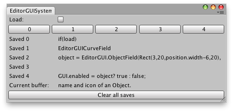

系统复制缓冲区。
使用此属性可以在您自己的应用程序中实现“复制和粘贴”功能。 systemCopyBuffer 会捕获在计算机上选择的任何文本。这 并不一定是在 Unity 中选择的文本。可以对 systemCopyBuffer 进行读取和写入。 \ 具有多个已保存的“copy”命令。
// Example that shows up to 5 strings. These strings are captured from Copy // commands on the machine. The Current buffer at the bottom of the window shows whatever string // is copied. The string can be copied to one of the five Save rows when the Load toggle is // five Save rows when the Load toggle is off and one of the horizontal buttons is pressed.
using UnityEngine; using UnityEditor;
public class SystemCopyBufferExample : EditorWindow { string[] savedCopies = new string[5]; bool load = false;
[MenuItem("Examples/Example showing systemCopyBuffer")] static void systemCopyBufferExample() { SystemCopyBufferExample window = EditorWindow.GetWindow<SystemCopyBufferExample>(); window.Show(); }
void OnGUI() { load = EditorGUILayout.Toggle("Load:", load);
EditorGUILayout.BeginHorizontal(); for (int i = 0; i < savedCopies.Length; i++) if (GUILayout.Button(i.ToString())) if (load) EditorGUIUtility.systemCopyBuffer = savedCopies[i]; else savedCopies[i] = EditorGUIUtility.systemCopyBuffer; EditorGUILayout.EndHorizontal();
for (int j = 0; j < savedCopies.Length; j++) EditorGUILayout.LabelField("Saved " + j, savedCopies[j]);
EditorGUILayout.LabelField("Current buffer:", EditorGUIUtility.systemCopyBuffer); if (GUILayout.Button("Clear all saves")) for (int s = 0; s < savedCopies.Length; s++) savedCopies[s] = ""; }
void OnInspectorUpdate() { this.Repaint(); } }
注意：iOS 和 Android 不支持该功能。